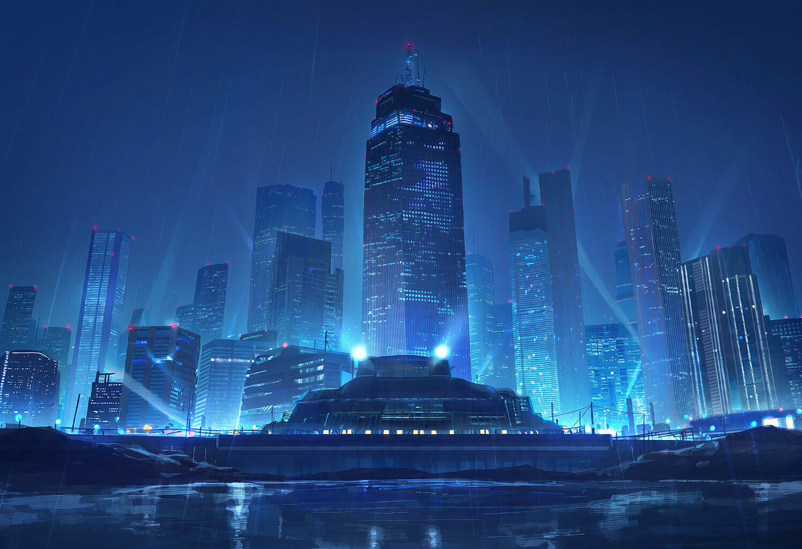

TERM 01
능력자
초월적인 힘을 지닌 인류의 일부. 대다수는 자신의 이익을 위해 능력을 사용한다.

어느 시점부터 인류의 일부에게 초월적인 '능력'이 깃들기 시작했다. 불, 속도, 재생, 정신 간섭 등 형태는 제각각이지만, 공통점은 하나 — 힘을 가진 자와 가지지 못한 자 사이에 건널 수 없는 격차가 생겼다는 것이다.
능력자 대다수는 그 힘을 사익을 위해 썼다. 범죄, 착취, 사적 복수 — 힘은 수단이 아니라 목적이 되었다. 이를 막기 위해 정부는 극소수의 능력자를 선발해 '히어로'로 세웠지만, 이들은 능력자 사회 전체에서 동족을 배신한 자로 취급받는다. 히어로라는 직함 자체가 암살 대상 1순위가 되는 이유다.
초월적인 힘을 지닌 인류의 일부. 대다수는 자신의 이익을 위해 능력을 사용한다.
능력이 전혀 없는 사람. 능력자 사회에서는 존재감 자체가 희미한 취급을 받는다.
정부 소속으로 능력자의 폭주를 저지하는 극소수의 인물. 능력자 커뮤니티에서는 '배신자'로 불린다.
자신의 능력을 사익과 폭력을 위해 사용하는 능력자를 통칭하는 표현. 히어로의 암살을 직접 실행하기도 한다.
무능력자인 채로 히어로가 된 유일한 인물. 서류 착오로 그 자리에 오르게 되었으며, 암살 위협 속에서 살아간다.
히어로 선발·관리·행정을 담당하는 정부 조직. NULL은 원래 이곳의 행정직에 지원했었다.